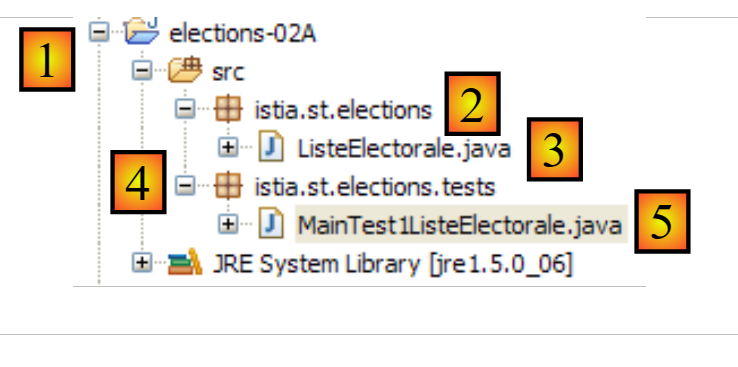
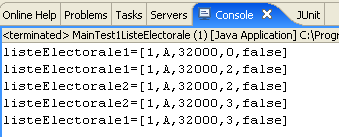
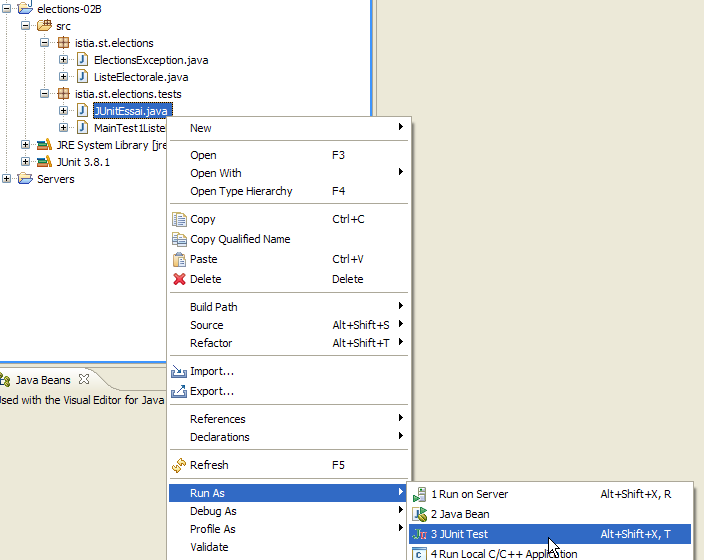
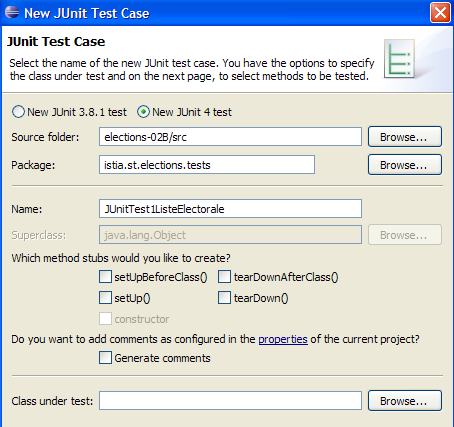
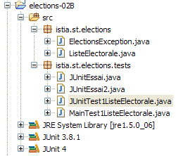

3. [TD]: Classes
Palavras-chave: classe, interface, herança, exceção, polimorfismo
Leituras recomendadas:
- parágrafos 2.1, 2.2, 2.4 e 2.7 do capítulo 2 de [ref1]: Classes e interfaces
- parágrafos 3.3 (classe String), 3.5 (classe ArrayList), 3.6 (classe Arrays)
Na parte 1 do exercício ELECTIONS não foi utilizada nenhuma classe. Construímos uma solução tal como a teríamos construído na linguagem C. Passamos agora a introduzir o conceito de classe Java.
3.1. Support
 |  |
A pasta [support / chap-03] contém o projeto Eclipse deste capítulo.
A partir de agora, iremos trabalhar com o JDK 1.8, uma vez que alguns dos projetos a seguir exigem esta versão do JDK. Para saber qual a versão do JDK utilizada, proceda da seguinte forma:
 |
 |
- em [4], o JRE (Java Runtime Environment) utilizado. Este JRE é, na verdade, um JDK (Java Development Kit), neste caso o [jdk1.8.0_60]. Se não for um JDK ou se tiver uma versão inferior à 1.8, proceda da seguinte forma: [5-21];
 |
- para [8], o JRE atualmente utilizado por predefinição pelo Eclipse;
- em [11], os diferentes JDK e JRE atualmente reconhecidos pelo Eclipse;
 |
- em [15], opte por um JDK em vez de um JRE. Este documento utiliza projetos Maven que requerem um JDK;
 |
 |
- no [21], existe um JDK com versão >=1.8;
- no [22-23], aceda às facetas (diferentes vistas de um mesmo projeto Eclipse) do projeto;
 |
- no [24], verifique se está a utilizar uma versão do Java >=1.8;
3.2. A turma [ListeElectorale]
Na linguagem C, provavelmente teríamos utilizado uma estrutura para representar uma lista de participantes na eleição. Poderia ter a seguinte forma:
O conceito de «estrutura» não existe na linguagem Java. É necessário substituí-lo pelo de «classe». Decide-se, portanto, criar uma classe para armazenar as informações sobre uma lista de candidatos. Esta teria a seguinte estrutura:
package istia.st.elections;
public class ListeElectorale {
/**
* identité de la liste
*/
private int id;
/**
* nom de la liste
*/
private String nom;
/**
* nombre de voix de la liste
*/
private int voix;
/**
* nombre de sièges de la liste
*/
private int sieges;
/**
* indique si la liste est éliminée ou non
*/
private boolean elimine;
/**
* constructeur par défaut
*/
public ListeElectorale() {
}
/**
*
* @param nom String : le nom de la liste
* @param voix int : son nombre de voix
* @param sieges int : son nombre de sieges
* @param elimine boolean : son état éliminé ou non
*/
public ListeElectorale(int id,String nom, int voix, int sieges, boolean elimine) {
...
}
/**
*
* @return int : l'identifiant de la liste
*/
public int getId() {
...
}
/**
* initialise l'identifiant de liste
* @param id int : identifiant de la liste
* @throws ElectionsException si id<1
*/
public void setId(int id) {
...
}
/**
*
* @return String : le nom de la liste
*/
public String getNom() {
...
}
/**
* initialise le nom de la liste
* @param nom String : nom de la liste
* @throws ElectionsException si le nom est vide ou blanc
*/
public void setNom(String nom) {
...
}
/**
*
* @return int : le nombre de voix de la liste
*/
public int getVoix() {
...
}
/**
* initialise le nombre de voix de la liste
* @param voix int : le nombre de voix de la liste
*/
public void setVoix(int voix) {
...
}
/**
*
* @return int : le nombre de sièges de la liste
*/
public int getSieges() {
...
}
/**
* fixe le nombre de sièges de la liste
* @param sieges int : le nombre de sièges de la liste
*/
public void setSieges(int sieges) {
...
}
/**
*
* @return boolean : valeur du champ elimine
*/
public boolean isElimine() {
...
}
/**
*
* @param sieges int
*/
public void setElimine(boolean elimine) {
...
}
/**
*
* @return String : identité de la liste électorale
*/
public String toString() {
...
}
}
- linha 8: número que identifica uma lista de forma única. Não é indispensável neste caso, mas está previsto para utilização futura.
- linha 13: o nome da lista.
- linha 17: o número de votos da lista
- linha 21: o número de lugares da lista
- linha 25: valor booleano que indica se a lista foi eliminada (percentagem de votos obtidos abaixo do limiar eleitoral) ou não.
Cada campo privado denominado [xyz] pode ser inicializado por um método denominado [setXyz]. O método [getXyz] permite, por sua vez, obter o valor do campo privado [xyz]. No caso específico em que [xyz] é um campo do tipo booleano, o método [getXyz] pode ser substituído pelo método [isXyz]. A nomenclatura específica destes métodos obedece a uma norma de codificação denominada norma JavaBean. Assim, definimos os seguintes métodos públicos:
- getId (linha 48), setId (linha 57)
- getNom (linha 65), setNom (linha 74)
- getVoix (linha 82), setVoix (linha 90)
- getSieges (linha 98), setSieges (linha 106)
- isElimine (linha 114), setElimine (linha 122)
- linhas 30-31: definem um construtor sem parâmetros. Este permite criar um objeto [ListeElectorale] sem o inicializar. Este pode, posteriormente, ser inicializado através dos métodos set.
- linhas 40-42: definem um construtor que permite criar um objeto [ListeElectorale], inicializando simultaneamente os seus cinco campos privados.
- linhas 130-132: definem o método [toString], que devolve uma cadeia de caracteres com os valores dos cinco campos do objeto.
Um programa de teste da classe ListeElectorale poderia ser o seguinte:
package istia.st.elections.tests;
import istia.st.elections.ListeElectorale;
public class MainTest1ListeElectorale {
public static void main(String[] args) {
// criação de uma lista eleitoral
ListeElectorale listeElectorale1 = new ListeElectorale(1, "A", 32000,
0, false);
// exibição da identidade da lista
System.out.println("listeElectorale1=" + listeElectorale1);
// alteração do número de lugares
listeElectorale1.setSieges(2);
// visualização da identidade da lista 1
System.out.println("listeElectorale1=" + listeElectorale1);
// uma nova lista eleitoral
ListeElectorale listeElectorale2 = listeElectorale1;
// visualização da identidade da lista 2
System.out.println("listeElectorale2=" + listeElectorale2);
// alteração do número de lugares
listeElectorale2.setSieges(3);
// exibição da identidade das duas listas
System.out.println("listeElectorale2=" + listeElectorale2);
System.out.println("listeElectorale1=" + listeElectorale1);
}
}
O ambiente Eclipse deste teste poderia ser o seguinte:
 |
- [1]: o projeto chama-se [elections-02A]
- [2]: a aplicação será colocada num pacote, neste caso [istia.st.elections]
- [3]: [ListeElectorale.java] é o código-fonte da classe [ListeElectorale]
- [4]: as classes de teste serão colocadas num pacote, neste caso [istia.st.elections.tests]
- [5]: a classe de teste [MainTest1ListeElectorale]
A saída no ecrã obtida após a execução do programa acima é a seguinte:

Tarefa a realizar: com base no que foi apresentado acima, complete o código da classe ListeElectorale.
3.3. Criação de uma classe de exceção [ElectionsException]
Entre as várias classes de exceção da linguagem Java, existe uma chamada [RuntimeException]. Esta classe deriva da classe [Exception], que é a raiz de todas as classes de exceção. A particularidade das instâncias de [RuntimeException] ou das instâncias derivadas é que não é necessário declará-las nem geri-las. Chamam-se exceções não controladas.
Vejamos um primeiro exemplo. A classe [BufferedReader] é uma classe cujas instâncias permitem ler linhas de texto num fluxo de dados. Possui um método [readLine] cuja assinatura é a seguinte:
Vemos que o método pode lançar uma exceção do tipo [IOException]. A árvore desta classe é a seguinte:
A classe [IOException] deriva da classe [Exception] (linha 3). O compilador obriga-nos a gerir e a declarar as exceções do tipo [java.lang.Exception] ou derivadas (exceto no caso do ramo [RuntimeException], que iremos apresentar mais adiante). Assim, para ler uma linha de texto digitada no teclado, seremos obrigados a escrever algo como:
Vejamos outro exemplo. Para converter uma cadeia de caracteres num número inteiro, pode-se utilizar o método estático [Integer.parseInt], cuja assinatura é a seguinte:
O argumento [s] é a cadeia de caracteres a transformar num inteiro. Vemos que o método pode lançar uma exceção do tipo [NumberFormatException]. A árvore de classes desta classe é a seguinte:
A classe [NumberFormatException] deriva da classe [RuntimeException] (linha 4). O compilador não nos obriga a gerir nem a declarar exceções do tipo [java.lang.RuntimeException] ou derivadas. Assim, poderemos escrever algo como:
Não somos obrigados a incluir uma cláusula [try - catch] para gerir a eventual exceção gerada por [Integer.parseInt] (linha 9).
Existem vantagens e desvantagens em criar e utilizar classes de exceção derivadas de [RuntimeException]:
- no que diz respeito às vantagens: o código fica mais leve
- quanto às desvantagens: pode-se acabar por recorrer aos métodos do C, em que cada função devolve um código de erro que poucas pessoas utilizam, precisamente para ter um código mais leve. Quando ocorre um erro não tratado deste tipo, o programa falha, geralmente de forma pouco elegante.
Decidimos criar uma classe especial que agrupe todas as exceções que possam ocorrer na nossa aplicação ELECTIONS. Chamar-se-á [ElectionsException] e derivará da classe [RuntimeException]. O seu código é o seguinte:
package istia.st.elections;
public class ElectionsException extends RuntimeException {
private static final long serialVersionUID = 1L;
public ElectionsException() {
super();
}
public ElectionsException(String message) {
super(message);
}
public ElectionsException(Throwable cause) {
super(cause);
}
public ElectionsException(String message, Throwable cause) {
super(message, cause);
}
}
- linha 1: colocamos a classe no pacote [istia.st.elections];
- linha 3: a classe deriva de [RuntimeException]. Por conseguinte, não é controlada;
- linha 4: um identificador de serialização que podemos ignorar por enquanto;
- na nossa aplicação, utilizaremos dois tipos de construtor:
- o construtor clássico das linhas 15-17, como se segue:
Neste caso, o método que chama um método que lança tal exceção pode tratá-la da seguinte forma:
// teste de exceção
try {
listeElectorale2.setSieges(-3);
} catch (ElectionsException ex) {
System.err.println("L'exception suivante s'est produite : ["
+ ex.toString() + "]");
}
- (continuação)
- ou o das linhas 14-20, destinado a reenviar uma exceção já ocorrida, encapsulando-a numa exceção do tipo [ElectionsException]:
try {
...;
} catch (SQLException ex) {
// encapsulamos a exceção
throw new ElectionsException("erreur de fermeture de la connexion à la BD",ex);
}
Este segundo método tem a vantagem de conservar a informação que a primeira exceção possa conter. Neste caso, o método que chama um método que lança tal exceção pode tratá-la da seguinte forma:
try {
...;
} catch (ElectionsException ex) {
System.out.println(ex.getMessage() + ", Cause : "+ ex.getCause().getMessage());
System.exit(1);
}
Tarefa a realizar: modifique o código da classe ListeElectorale de forma a que os métodos set lancem uma exceção do tipo [ElectionsException] caso a inicialização solicitada esteja incorreta, como, por exemplo, inicializar o nome com uma cadeia vazia.
O projeto Eclipse de teste desta nova versão poderia ser o seguinte:
 |
- [1]: o projeto chama-se [elections-02B]
- [2]: a aplicação está colocada num pacote, neste caso [istia.st.elections]
- [3]: as classes [ListeElectorale] e [ElectionsException]
- [4]: as classes de teste estão colocadas num pacote, neste caso [istia.st.elections.tests]
- [5]: a classe de teste [MainTest1ListeElectorale]
A classe de teste [MainTest1ListeElectorale], já analisada, é ligeiramente alterada para testar os casos de exceção:
package istia.st.elections.tests;
import istia.st.elections.ElectionsException;
import istia.st.elections.ListeElectorale;
public class MainTest1ListeElectorale {
public static void main(String[] args) {
// criação de uma lista eleitoral
ListeElectorale listeElectorale1 = new ListeElectorale(1, "A", 32000,
0, false);
// exibição da identidade da lista
System.out.println("listeElectorale1=" + listeElectorale1);
// alteração do número de lugares
listeElectorale1.setSieges(2);
// exibição da identidade da lista 1
System.out.println("listeElectorale1=" + listeElectorale1);
// uma nova lista eleitoral
ListeElectorale listeElectorale2 = listeElectorale1;
// visualização da identidade da lista 2
System.out.println("listeElectorale2=" + listeElectorale2);
// alteração do número de lugares
listeElectorale2.setSieges(3);
// exibição da identidade das duas listas
System.out.println("listeElectorale2=" + listeElectorale2);
System.out.println("listeElectorale1=" + listeElectorale1);
// teste de exceção
try {
listeElectorale2.setSieges(-3);
} catch (ElectionsException ex) {
System.err.println("L'exception suivante s'est produite : ["
+ ex.toString() + "]");
}
}
}
- linha 28: tenta-se inicializar o número de lugares com um valor proibido
- linha 30: se ocorrer uma exceção, esta é apresentada
A execução do teste produz os seguintes resultados:

Verifica-se que a classe [ListeElectorale] gerou efetivamente uma exceção quando se tentou inicializar o número de lugares com um valor inválido (linha 28 do código).
3.4. Uma classe de teste unitário
O tipo de teste anterior baseia-se numa verificação visual. Verifica-se se o que aparece no ecrã corresponde ao esperado. Trata-se de um método desaconselhado num ambiente profissional. Os testes devem ser sempre automatizados ao máximo e ter como objetivo não necessitar de qualquer intervenção humana. O ser humano está, de facto, sujeito à fadiga e a sua capacidade de verificar testes diminui ao longo do dia.
Uma aplicação evolui ao longo do tempo. A cada evolução, é necessário verificar se a aplicação não sofre «regressão», c.a.d, e se continua a passar nos testes de bom funcionamento que foram realizados durante a sua criação inicial. Estes testes são designados por testes de «não regressão». Uma aplicação de alguma envergadura pode necessitar de centenas de testes. De facto, testa-se cada método de cada classe da aplicação. A isto chama-se testes unitários. Estes podem mobilizar muitos programadores se não tiverem sido automatizados.
Foram desenvolvidas ferramentas para automatizar os testes. Uma delas chama-se [JUnit]. Trata-se de uma biblioteca de classes destinada a gerir os testes. Vamos utilizar esta ferramenta para testar a classe [ListeElectorale].
Um programa de teste JUnit (versões 4.x) tem o seguinte formato:
package istia.st.elections.tests;
import org.junit.Assert;
import org.junit.After;
import org.junit.Before;
import org.junit.Test;
public class JUnitEssai {
@Before
public void avant() throws Exception {
System.out.println("tearUp");
}
@After
public void après() throws Exception {
System.out.println("tearDown");
}
@Test
public void t1() {
System.out.println("test1");
Assert.assertEquals(1, 1);
}
@Test
public void t2() {
System.out.println("test2");
Assert.assertEquals(1, 2);
}
}
- linha 1: a classe foi colocada no pacote [istia.st.elections.tests];
- linha 11: o método anotado com a anotação [@Before] é executado antes de cada teste unitário;
- linha 16: o método anotado com a anotação [@After] é executado após cada teste unitário;
- linha 21: um método anotado com a anotação [@Test] é um método testado pelo teste unitário. Os métodos anotados com [@Test] serão executados um após o outro, salvo indicação em contrário do testador, que pode selecionar ele próprio os métodos a testar. Antes de cada execução de um método [@Test], é executado o método [@Before]. Após cada execução de um método [@Test], é executado o método [@After];
- linhas 22-25: definem um método de teste [t1];
- linha 18: um dos métodos [Assert.assert*] que permite verificar asserções. Encontram-se os seguintes métodos [assert]:
- assertEquals(expressão1, expressão2): verifica se os valores das duas expressões são iguais. São aceites vários tipos de expressão (int, String, float, double, boolean, char, short). Se as duas expressões não forem iguais, é lançada uma exceção do tipo [AssertionFailedError ],
- assertEquals(real1, real2, delta): verifica se dois valores reais são iguais com uma tolerância de delta, c.a.d abs(real1-real2) <= delta. Pode-se escrever, por exemplo, assertEquals(real1, real2, 1E-6) para verificar se dois valores são iguais com uma precisão de 10⁻⁶,
- assertEquals(mensagem, expressão1, expressão2) e assertEquals(mensagem, real1, real2, delta) são variantes que permitem especificar a mensagem de erro a associar à exceção do tipo [AssertionFailedError] lançada quando o método [assertEquals] falha,
- assertNotNull(Object) e assertNotNull(message, Object): verifica se Object não é igual a null,
- assertNull(Object) e assertNull(message, Object): verificam se Object é igual a null,
- assertSame(Object1, Object2) e assertSame(message, Object1, Object2): verifica se as referências Object1 e Object2 apontam para o mesmo objeto,
- assertNotSame(Object1, Object2) e assertNotSame(message, Object1, Object2): verifica se as referências Object1 e Object2 não apontam para o mesmo objeto;
- linha 24: esta asserção deve ser bem-sucedida;
- linha 30: esta asserção deve falhar;
No ambiente Eclipse, a criação de uma classe de teste JUnit pode ser feita da seguinte forma:
 |
- [1]: clique com o botão direito do rato no pacote ao qual se pretende adicionar a classe de teste e, em seguida, selecione a opção [JUnit / New / JUnit Test Case]
 |
- [1]: escolha de uma versão JUnit;
- [2]: escolha da pasta na qual a classe de teste deve ser criada;
- [3]: seleção do pacote no qual a classe de teste deve ser criada;
- [4]: nome da classe de teste;
- [5]: seleção dos métodos a incluir na classe que vai ser gerada;
- [6]: a classe JUnitEssai foi gerada
O assistente anterior gera uma classe praticamente vazia:
package istia.st.elections.tests;
import org.junit.Assert;
import org.junit.After;
import org.junit.Before;
public class JUnitEssai {
@Before
public void setUp() throws Exception {
}
@After
public void tearDown() throws Exception {
}
}
Vamos completar e modificar o código anterior da seguinte forma:
package istia.st.elections.tests;
import org.junit.Assert;
import org.junit.After;
import org.junit.Before;
import org.junit.Test;
public class JUnitEssai2 {
@Before
public void avant() throws Exception {
System.out.println("tearUp");
}
@After
public void après() throws Exception {
System.out.println("tearDown");
}
@Test
public void t1() {
System.out.println("test1");
Assert.assertEquals(1, 1);
}
@Test
public void t2() {
System.out.println("test2");
Assert.assertEquals(1, 2);
}
}
No Eclipse, um clique com o botão direito do rato na classe de teste, seguido da opção [Run as / JUnit test], permite executá-la:

Os resultados obtidos na execução deste teste são os seguintes:

Acima, o método [test2] falhou. Sempre que um teste falha, é-lhe associada uma mensagem de erro. Para o [test2], é a mensagem apresentada acima. A mensagem indica o número da linha onde ocorreu o erro (linha 30). Na linha 30, a chamada que falhou foi:
Assert.assertEquals(1, 2);
O primeiro parâmetro é designado por valor esperado, o segundo por valor real. A mensagem de erro de [test2] acima indica que o valor esperado era 2, mas que o valor real foi 3.
Por fim, as mensagens apresentadas na consola pelos diferentes métodos de teste foram as seguintes:

Estas mensagens mostram que os métodos [@Before] e [@After] foram efetivamente chamados, respetivamente, antes e depois de cada método de teste.
As classes de teste não são necessariamente escritas pelos próprios programadores. Podem ser escritas pelas pessoas que redigiram as especificações da aplicação. Algumas metodologias de desenvolvimento, conhecidas como TDD (Test Driven Development), recomendam a criação das classes de teste antes mesmo da criação das classes a testar. Isto permite, por vezes, clarificar especificações que, de outra forma, poderiam ser interpretadas de várias maneiras.
Vamos criar um teste JUnit 4, denominado [JUnitTest1ListeElectorale], para a classe [ListeElectorale]. No Eclipse, procederemos conforme descrito anteriormente:
 |  |
Completamos o código gerado pelo assistente da seguinte forma:
package istia.st.elections.tests;
import org.junit.Assert;
import istia.st.elections.ElectionsException;
import istia.st.elections.ListeElectorale;
import org.junit.Test;
public class JUnitTest1ListeElectorale {
@Test
public void t1() {
// criação da lista eleitoral
ListeElectorale liste = new ListeElectorale(1, "a", 32000, 0, false);
// verificações
Assert.assertEquals("a", liste.getNom());
Assert.assertEquals(32000, liste.getVoix());
Assert.assertEquals(false, liste.isElimine());
Assert.assertEquals(0, liste.getSieges());
// verificação da validade do ID
boolean erreur = false;
try {
liste.setId(-4);
} catch (ElectionsException e) {
erreur = true;
}
Assert.assertEquals(true, erreur);
// verificação da validade do nome
erreur = false;
try {
liste.setNom("");
} catch (ElectionsException e) {
erreur = true;
}
Assert.assertEquals(true, erreur);
// verificação da validade dos votos
erreur = false;
try {
liste.setVoix(-4);
} catch (ElectionsException e) {
erreur = true;
}
Assert.assertEquals(true, erreur);
// verificação da validade dos lugares
erreur = false;
try {
liste.setSieges(-4);
} catch (ElectionsException e) {
erreur = true;
}
Assert.assertEquals(true, erreur);
}
}
A execução do teste produz o seguinte resultado:

Os testes foram bem-sucedidos. Consideraremos, a partir de agora, que temos uma classe [ListeElectorale] operacional.
3.5. MainElections: versão 2
Leituras recomendadas:
- parágrafos 2.1, 2.2, 2.4 e 2.7 do capítulo 2 de [1]: Classes e interfaces
- parágrafos 3.3 (classe String), 3.5 (classe ArrayList), 3.6 (classe Arrays)
Pretende-se reescrever a aplicação [Elections], adicionando-lhe as seguintes novas restrições:
- utilizar-se-á a classe [ListeElectorale] para representar uma lista de candidatos
- a aplicação solicitará ao utilizador, através do teclado, as seguintes informações:
- o número de lugares a preencher
- os nomes e as vozes das listas. Não se sabe, a priori, quantas listas existem. A última lista será identificada por um nome igual à cadeia «*».
- Como não se sabe, à partida, o número de listas, estas serão, em primeiro lugar, armazenadas num objeto do tipo [ArrayList]. Posteriormente, quando todas as listas tiverem sido introduzidas, serão transferidas para uma tabela de listas.
- Os resultados serão apresentados por ordem decrescente do número de lugares obtidos.
Para ordenar uma matriz T, dispõe-se de vários métodos estáticos da classe [Arrays]:
- Arrays.sort(T): ordena a tabela T de acordo com uma ordem natural, caso exista (crescente para números e datas, alfabética para cadeias de caracteres, etc.)
- Arrays.sort(T,comparador): para ordenar tabelas T que não tenham uma ordem natural. É o caso, aqui, da tabela de listas que deve ser ordenada de acordo com um campo específico da lista: o número de lugares obtidos.
No método Arrays.sort(T,comparador), o parâmetro «comparador» é um objeto que implementa a seguinte interface Comparator:

- o método compare permite comparar dois elementos da tabela T
- o método equals permite determinar se dois objetos são iguais
Ambos os métodos comparam tipos Object obj1 e obj2. Determinar se obj1<obj2, obj1=obj2 ou obj1>obj2 é maior depende da relação de ordem que se pretende estabelecer entre os dois objetos. Cabe ao programador que implementa esta interface indicar como se determina que:
- obj1 é menor que obj2
- obj1 é maior do que obj2
- obj1 é igual a obj2
A classe Object, da qual deriva toda a classe Java, já dispõe de um método [equals]. Para ordenar um array T de objetos do tipo O, o método [equals] da classe O não é útil. Por isso, pode-se manter a implementação por predefinição fornecida pela classe Object. Nesse caso, apenas o método [compare] deve ser implementado. Este método é chamado repetidamente pelo método [Arrays.sort]. Este último passa, em cada chamada, como parâmetros obj1 e obj2 do método compare, dois elementos da matriz T a ordenar. No nosso caso, estes elementos serão do tipo [ListeElectorale]. Deve-se notar aqui o polimorfismo em ação. O método [compare] está definido para receber parâmetros do tipo [Object]. Isto significa que pode receber parâmetros do tipo [Object] ou derivados (polimorfismo). Como [Object] é a classe pai de todas as classes Java, os parâmetros efetivos podem ter o tipo [ListeElectorale].
Para uma ordenação crescente, o método [compare] deve devolver:
- -1 se obj1 for menor que obj2
- +1 se obj1 for maior que obj2
- 0 se obj1 for igual a obj2
Para uma ordenação em ordem decrescente, os valores +1 e -1 são invertidos. Os termos «é menor que», «é maior que» e «é igual a» expressam uma relação de ordem. Para objetos do tipo [ListeElectorale], teremos a relação lista1 «é menor que» lista2 se a lista1 tiver menos votos do que a lista2.
No mesmo ficheiro fonte da classe [MainElections], é possível adicionar uma segunda classe:
- linha 2: a classe não está declarada como pública. Num ficheiro fonte Java, pode haver várias classes, mas apenas uma pode ter o atributo «public», que é aquela que tem o nome do ficheiro fonte.
No método compare anterior, os parâmetros são do tipo Object,, o que obriga as linhas 7 e 8 a efetuar uma conversão dos parâmetros do método, do tipo Object para o tipo ListeElectorale. A assinatura do método compare é imposta pela interface Comparator, que foi criada para comparar quaisquer objetos. Desde a versão 1.5 do JDK, existe uma interface genérica Comparator: Comparator<T>, em que T é um tipo Java qualquer. O método compare da interface Comparator<T> compara objetos do tipo T e não do tipo Object, o que evita as conversões de tipo anteriores. A classe de comparação de objetos do tipo ListeElectorale poderia ter o seguinte aspeto:
// classe de comparação de listas eleitorais
class CompareListesElectorales implements Comparator<ListeElectorale> {
// comparação de duas listas eleitorais com base no número de lugares
public int compare(ListeElectorale listeElectorale1,
ListeElectorale listeElectorale2) {
...
}
}
- linha 2: a classe implementa a interface Comparator<ListeElectorale>
- linhas 5-6: os parâmetros do método compare são do tipo ListeElectorale. A conversão de tipos já não é necessária.
O JDK 1.5 introduziu o conceito de classe/interface genérica para várias classes/interfaces do JDK 1.4 que, inicialmente, manipulavam apenas objetos do tipo Object. É o caso das listas, dos dicionários, etc.
Mencionámos anteriormente que, como não se conhecia o número de listas, não era possível armazená-las numa matriz. Podem ser armazenadas num objeto ArrayList que implementa o conceito de «lista de objetos». Esta classe armazena objetos do tipo Object. A partir da versão 1.5 do JDK, existem listas de objetos tipados. Assim, utilizar-se-á um objeto ArrayList<ListeElectorale> para armazenar as listas antes de as transferir para um tabulero. Se este se chamar tListes, a sua ordenação será obtida através da instrução:
// ordenação das listas
Arrays.sort(tListes, new CompareListesElectorales());
onde CompareListesElectorales é a classe que implementa a interface Comparator<ListeElectorale>.
Tarefa a realizar: reescreva a aplicação [Elections] tendo em conta estas novas especificações.
O projeto Eclipse poderia ser o seguinte:
 |
Um exemplo de execução de [1] é o seguinte: